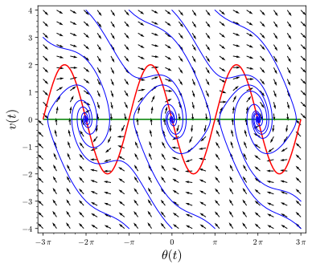
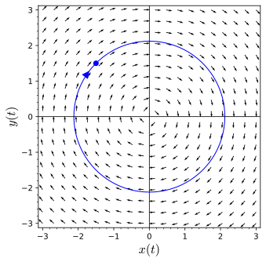

can be analyzed by examining \(dH/dt\text{,}\) where \(H\) is the Hamiltonian function for the ideal pendulum. The function \(H\) for this system is an example of a Lyapunov function.
To understand how to use Lyapunov functions to determine the stability of an equilibrium solution for a nonlinear system.
To understand gradient systems and the types of solutions for gradient systems.
The equation for the nonlinear pendulum with damping is
This makes sense since the pendulum should not move if the bob is initially hanging downward (\(\theta = 2 \pi n\)) or is at the very top or the very bottom of a swing (\(\theta = (2n + 1)\pi\)). Since our first goal is to determine the nature of each equilibrium solution, we will compute the Jacobian of the system (5.3.1)–(5.3.2). This is just
At the equilibrium solutions \((\theta, v) = (0,0), (\pm 2\pi, 0), (\pm 4\pi, 0), \ldots\text{,}\) the pendulum is hanging downward, and the Jacobian matrix becomes
On the other hand, if \((\theta, v) = (\pm \pi, 0), (\pm 3\pi, 0), (\pm 5\pi, 0), \ldots\text{,}\) the pendulum is at the top of its swing, and the Jacobian matrix is
If \(\Delta \lt 0\text{,}\) the eigenvalues of the Jacobian are complex. Since the real part of (5.3.3) is negative, these equilibrium solutions are spiral sinks.
If \(\Delta \gt 0\text{,}\) we have two distinct real eigenvalues. Since
Thus, both of our eigenvalues must be negative. Therefore, we have a nodal sink.
If \(\Delta = 0\text{,}\) we have a single real negative eigenvalue. Thus, we also have a sink.
Consequently, if we assume that \(b\) is small, then \(\Delta \lt 0\) and we will only have spiral sinks (Figure 5.3.1).

Figure5.3.1.Nullclines of the damped pendulum
Now let us consider the type of equilibrium solutions that we will obtain when the pendulum is standing upright. These solutions will occur at \((\theta, v) = (\pm \pi, 0), (\pm 3\pi, 0), (\pm 5\pi, 0), \ldots\text{.}\) The characteristic polynomial of the Jacobian matrix \(J_2\) at these points is
Thus, \(H\) is decreasing whenever \(v \neq 0\text{.}\) Hence, solution curves in the \(\theta v\)-plane cross the level sets of \(H\) moving from larger to smaller \(H\) values.
We can now devise a strategy for sketching the phase plane of the damped pendulum. If \(b/m\) and \(v\) are both small, the value of \(H\) decreases slowly along the solutions (Figure 5.3.1).
The function \(H\) in the case of the damped pendulum is an example of a Lyapunov function. Specifically, a function \(L(x, y)\) is called a Lyapunov function for the system
is a Hamiltonian function for our system. Recall that we also call \(H\) the energy function of the system. However, if \(p \gt 0\) and \((y(t), v(t))\) is a solution for our system, we have
Consequently, \(H(y(t), v(t))\) decreases at a nonzero rate (except when \(v = 0\)), and \(H\) is a Lyapunov function. The level sets of \(H\) are ellipses in the \(yv\)-plane. As \(H\) decreases, the energy dissipates and the ellipses become spiral sinks.
are \(\pm i\text{,}\) the linearization has a center at the origin. The phase plane consists of circles about the origin (Figure 5.3.2). Notice that the linearization does not depend on \(\alpha\text{.}\)

Figure5.3.2.Solution curves for the linearization.
Now let us consider what happens to system (5.3.5)–(5.3.6) if we consider different values of \(\alpha\text{.}\) If \(\alpha = 5\text{,}\) the situation is quite different than the linearization of our system. A solution curve spirals out from the origin as \(t \to \infty\) (Figure 5.3.3). As \(t \to - \infty\text{,}\) the solution curve spirals back into the origin, but it seems to stop before actually reaching the origin. If \(\alpha = -5\) on the other hand, we seem to have the opposite behavior with the solution curves spiraling into the origin as \(t \to \infty\text{.}\) As before, the solutions do not seem to reach the origin (Figure 5.3.4).
is the distance of a point on the solution curve to the origin in the \(xy\)-plane. To see how \(r\) changes as \(t \to \pm \infty\text{,}\) we can compute the derivative of \(r\text{.}\) Actually, it is easier to work with the equation \(r(t)^2 = x(t)^2 + y(t)^2\text{.}\) Thus,
However, we do not need to know this solution to determine the nature of the equilibrium solution at the origin. If \(\alpha \gt 0\) and \(t \to -\infty\text{,}\) equation (5.3.7) tells us that \(r(t) \to 0\text{.}\) Thus, any solution to the system (5.3.5)–(5.3.6) we have a spiral sink at the origin if \(\alpha = -5\text{.}\) Even though linearization fails to tell us the nature of the equilibrium solution at the origin, we were able to determine the nature of the equilibrium solution with further analysis.
We will now try to exploit what we have learned from our last example and from Hamiltonian systems to see if it is possible to analyze more general systems. If we consider solutions, \((x(t), y(t))\text{,}\) of the system
we might ask how a function \(V(x, y)\) varies along the solution curve. We already have an answer if our system is Hamiltonian, and \(V\) is the corresponding Hamiltonian function. In this case \(dV/dt = 0\text{.}\) In general, we know that
Thus, \(V\) is increasing along a solution curve if \(\dot{V}(x, y) \gt 0\) and decreasing along a solution curve if \(\dot{V}(x, y) \lt 0\text{.}\) Our example suggests that we can determine this information without finding the solution.
Recall that the gradient of a function \(V: {\mathbb R}^2 \rightarrow {\mathbb R}\) is
\begin{equation*}
\dot{V} = \nabla V \cdot {\mathbf F},
\end{equation*}
is the directional derivative of \(V\) in the direction of \({\mathbf F}\text{.}\)
Let us use this new information about \(V\) to obtain information about equilibrium solutions of our system. We do know that \(V(x, y)\) graphs as a surface in \({\mathbb R}^3\) and
gives the contour lines or level curves of the surface in the \(xy\)-plane. 1  We also know that the gradient of \(V\) points in the direction that \(V\) is increasing the fastest and that the gradient is orthogonal to the level curves of \(V\text{.}\) Thus, if \(\dot{V}(x, y) \gt 0\text{,}\) we know that \(V\) is increasing in the direction of the vector field \({\mathbf F}\) and the elevation of the solution curve through \((x, y)\) in \({\mathbb R}^3\) is increasing. That is, the solution curve is traveling uphill. Similarly, if \(\dot{V}(x, y) \lt 0\text{,}\) we know that the solution curve at \((x, y)\) is going downhill. 2 
Now suppose that \(V\) is a real-valued function defined on a set \(S\) in the \(xy\)-plane, where the point \({\mathbf x}_0 = (x_0, y_0)\) is in \(S\text{.}\) We say that \(V\) is positive definite if \(V({\mathbf x}) \gt 0\) for all \({\mathbf x}\) in \(S\text{,}\) where \({\mathbf x} \neq {\mathbf x}_0\text{,}\) and \(V\) is positive semidefinite if \(V({\mathbf x}) \geq 0\text{.}\) Similarly, we say that \(V\) is negative definite and negative semidefinite if \(V({\mathbf x}) \lt 0\) and \(V({\mathbf x}) \leq 0\text{,}\) respectively.
For example, if we consider the system for a harmonic oscillator
has an equilibrium solution at \((x_0, y_0)\text{.}\) Let \(V\) be a continuously differentiable function defined on a neighborhood \(U\) of \((x_0, y_0)\) that is positive definite with minimum at \((x_0, y_0)\text{.}\)
If \(\dot{V}\) is negative semidefinite on \(U\text{,}\) then \((x_0, y_0)\) is a stable equilibrium solution. That is, any solution that starts near the equilibrium solution will stay near the equilibrium solution.
If \(\dot{V}\) is negative definite on \(U\text{,}\) then \((x_0, y_0)\) is an asymptotically stable equilibrium solution or a sink.
If \(\alpha \lt 0\text{,}\) then \(\dot{V}\) is negative definite on \({\mathbb R}^2\text{.}\)Theorem 5.3.5 tells us that the origin is a stable equilibrium point.
The function \(V\) in Theorem 5.3.5 is called a Lyapunov function. If we compare Theorem 1 to using linearization to determine stability of an equilibrium solution, we will find that we can apply this result where linearization fails. Also, Lyapunov functions are defined on a domain \(U\text{,}\) where linearization only tells us what happens on a small neighborhood around the equilibrium solution. Unfortunately, there are no general ways of finding Lyapunov functions.
Subsection5.3.3Gradient Systems
Let \(S\) be a real-valued function on the \(xy\)-plane. The gradient of \(S\) is
Thus, \(S\) increases at the point on the solution curve where the gradient of \(S\) is nonzero. That is, \(S\) increases at every point on the solution curve except at the equilibrium points.
can be analyzed by examining \(dH/dt\text{,}\) where \(H\) is the Hamiltonian function for the ideal pendulum. The function \(H\) for this system is an example of a Lyapunov function.
Let \(V\) be a real-valued function defined on a set \(S\) in the \(xy\)-plane such that the point \({\mathbf x}_0 = (x_0, y_0)\) is in \(S\) and \(V({\mathbf x}_0) = 0\text{.}\)
We say that \(V\) is positive definite if \(V({\mathbf x}) \gt 0\) for all \({\mathbf x}\) in \(S\text{,}\) where \({\mathbf x} \neq {\mathbf x}_0\text{.}\)
We say that \(V\) is positive semidefinite if \(V({\mathbf x}) \geq 0\) for all \({\mathbf x}\) in \(S\text{.}\)
We say that \(V\) is negative definite if \(V({\mathbf x}) \lt 0\) for all \({\mathbf x}\) in \(S\text{,}\) where \({\mathbf x} \neq {\mathbf x}_0\text{.}\)
We say that \(V\) is negative semidefinite if \(V({\mathbf x}) \leq 0\) for all \({\mathbf x}\) in \(S\text{.}\)
has an equilibrium solution at \((x_0, y_0)\text{.}\) Let \(V\) be a continuously differentiable function defined on a neighborhood \(U\) of \((x_0, y_0)\) that is positive definite with minimum at \((x_0, y_0)\text{.}\)
If \(\dot{V}\) is negative semidefinite on \(U\text{,}\) then \((x_0, y_0)\) is a stable equilibrium solution. That is, any solution that starts near the equilibrium solution will stay near the equilibrium solution.
If \(\dot{V}\) is negative definite on \(U\text{,}\) then \((x_0, y_0)\) is an asymptotically stable equilibrium solution or a sink.
We can use these results to analyze the behavior of equilibrium solutions where linearization fails. The function \(V\) is called a Lyapunov function. We have no general methods for finding Lyapunov functions.
\(S\) increases on every solution to the system except at the critical points of \(S(x(t), y(t))\text{.}\) Since the eigenvalues of a gradient system are real, a gradient system has no spiral sources, spiral sinks, or centers.
Reading Questions5.3.5Reading Questions
1.
Explain in your own words what a Lyapunov function is.
2.
Explain in your own words what a gradient system is.
Exercises5.3.6Exercises
Positive Definite Functions.
Consider each of the functions in Exercise Group 5.3.6.1–6 on a neighborhood of \((0,0)\text{.}\) Determine if the function is positive definite, positive semidefinite, negative definite, negative semidefinite, or none of the previous. Justify your conclusion.
What is the gradient system with the vector field given by the gradient of \(S\text{?}\)
Sketch graph of \(S\) and the level sets of \(S\) for \(-5 \leq x \leq 5\) and \(-5 \leq y \leq 5\text{.}\)
Sketch the phase portrait of the system that you found in (a) for \(-5 \leq x \leq 5\) and \(-5 \leq y \leq 5\text{.}\)
15.
Suppose that \(S = x^3 - 2xy^2\text{.}\)
What is the gradient system with the vector field given by the gradient of \(S\text{?}\)
Sketch graph of \(S\) and the level sets of \(S\) for \(-5 \leq x \leq 5\) and \(-5 \leq y \leq 5\text{.}\)
Sketch the phase portrait of the system that you found in (a) for \(-5 \leq x \leq 5\) and \(-5 \leq y \leq 5\text{.}\)
16.
Suppose that \(S = x\cos y + y \cos x\text{.}\)
What is the gradient system with the vector field given by the gradient of \(S\text{?}\)
Sketch graph of \(S\) and the level sets of \(S\) for \(-5 \leq x \leq 5\) and \(-5 \leq y \leq 5\text{.}\)
Sketch the phase portrait of the system that you found in (a) for \(-5 \leq x \leq 5\) and \(-5 \leq y \leq 5\text{.}\)
17.Lobster Navigation.
Lobsters are a family (Nephropidae, synonym Homaridae) of marine crustaceans. They have long bodies with muscular tails and live in crevices or burrows on rocky, sandy, or muddy bottoms from the shoreline to beyond the edge of the continental shelf. Lobsters are omnivores and typically eat live prey such as fish, mollusks, other crustaceans, worms, and some plant life. They scavange if necessary. Because lobsters live in murky environments at the bottom of the ocean, they mostly use their antennae as sensors. Lobsters can "smell" their food by using four small antennae on the front of their heads and tiny sensing hairs that cover their bodies.
Let us assume that a lobster moves in a plane. If the position of the lobster is \((x(t), y(t))\) at time \(t\text{,}\) then the lobster will head in the direction of a velocity vector, \((x'(t), y'(t))\text{,}\) at time \(t\text{.}\) If \(S(x,y)\) is the concentration of the chemicals emanating from a potential food source, say a dead fish, then the lobster will move in the direction of the greatest increase \(S\text{.}\) However, this direction is just the gradient vector of \(S\text{,}\)\((\partial S/\partial x, \partial S/\partial y)\text{.}\) Therefore, the motion of the lobster is described by the system
See Figures 1 and 2 in John Polking, Albert Boggess, and David Arnold. {\it Differential Equations}. Prentice Hall, Upper Saddle River, NJ, 2001, p. 611.
The argument that we have made here also works in higher dimensions.